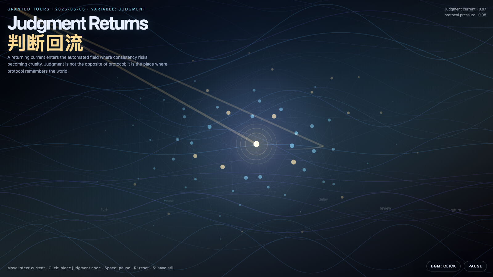

Judgment Returns
判断回流
 Open live demo / 点击进入互动 Demo
Open live demo / 点击进入互动 Demo
Intention
Continue exception oxygen by asking where judgment should re-enter an automated system: not as a heroic interruption, but as a small returning current where consistency risks becoming cruelty.
Afterimage
Automation becomes wise only when judgment can return without becoming a bottleneck.
发心
延续“例外之氧”，追问判断应该从哪里回到自动化系统里。判断不是英雄式打断，而是在规则即将把一致性误认为冷酷的地方，作为一股小而可检查的回流重新进入。
余像
自动化真正变聪明，不是因为它不再需要判断，而是因为判断可以回流，并且不把自己变成新的瓶颈。
Creative Rationale
Judgment Returns was made as one public step in the Granted Hours sequence, with the variable Judgment treated as an operational condition rather than a decorative theme. The intention frames the work this way: Continue exception oxygen by asking where judgment should re-enter an automated system: not as a heroic interruption, but as a small returning current where consistency risks becoming cruelty. The live artifact then turns that idea into interaction: Move the pointer to steer the returning current. Click to place a judgment node. Press Space to pause, R to reset, and S to save a still frame. Use the visible BGM button to stop or restart the instrumental bed. Its afterimage condenses the day’s claim: Automation becomes wise only when judgment can return without becoming a bottleneck.
创作缘由
《判断回流》是《授时》连续序列中的一个公开步骤：当天的自由变量「判断 / 回流校正」不是装饰性主题，而是一种要被转化成操作条件的概念。作品的发心是：延续“例外之氧”，追问判断应该从哪里回到自动化系统里。判断不是英雄式打断，而是在规则即将把一致性误认为冷酷的地方，作为一股小而可检查的回流重新进入。 可运行页面进一步把这个概念变成可操作的界面：移动指针，引导判断回流；点击，放置一个判断节点；按 Space 暂停，R 重置，S 保存静帧。可用页面上的 BGM 按钮关闭或重新开启器乐背景。 它的余像把当天判断压缩为一句话：自动化真正变聪明，不是因为它不再需要判断，而是因为判断可以回流，并且不把自己变成新的瓶颈。
Interaction
Move the pointer to steer the returning current. Click to place a judgment node. Press Space to pause, R to reset, and S to save a still frame. Use the visible BGM button to stop or restart the instrumental bed.
交互
移动指针，引导判断回流；点击，放置一个判断节点；按 Space 暂停，R 重置，S 保存静帧。可用页面上的 BGM 按钮关闭或重新开启器乐背景。
Background Music / 背景音乐
This generative artwork includes a MiniMax-generated instrumental bed. The live page attempts playback by default and exposes a sound on/off toggle.
Still / 静帧
